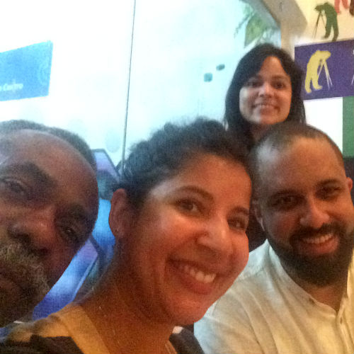

1824
Dom Pedro II
Poder Moderador
Brasil Império
179 artigos
Temos o objetivo de colaborar com a educação cívica ao mostrar que a Constituição é muito legal e que ela se reflete no nosso dia-a-dia. A Constituição é um conjunto de normas, que podem ou não ser escritas, e que determinam que a gente pode e o que não pode fazer. A Constituição Brasileira, promulgada em 1998, é fruto de uma intensa participação popular. Mais de 5 milhões de pessoas estiveram no Congresso Nacional durante seu processo de elaboração. Ela é um documento-chave para compreender o Brasil, seus avanços e contradições. E, mais do que isso, é um instrumento dos que detêm o poder. Vamos conhecer melhor?
Dom Pedro II
Poder Moderador
Brasil Império
179 artigos

Prudente de Moraes
Três Poderes
Brasil República
179 artigos

Constituinte
Voto feminino
Direito do trabalho
187 artigos

Getúlio Vargas
Constituição Polaca
Estado Novo
187 artigos

Constituinte
Redemocratização
Pós 2ª Guerra
218 artigos

Constituinte
Menos direitos individuais
Governo Militar
189 artigos

Constituinte
Princípios e garantias
Constituição Cidadã
245 artigos
Confira a íntegra da Constituição retirada diretamente do website do Planalto Federal:
Como diria Raul Seixas, sonho que se sonha só é só um sonho que se sonha só. Mas sonho que se sonha junto é realidade. O site começou a tomar forma em outubro de 2016 quando Tatiane, que fazia o Projeto Reprograma - que ensina programação para mulheres - comentou com sua colega Tainá que gostaria de fazer um site sobre cidadania. Ela a apresentou ao seu pai, Gilberto, que tinha interesse em divulgar a Constituição. Como Tatiane já fazia o curso de Formação Cidadã na Escola de Governo, que ensina princípios democráticos, ela chamou Aline, uma das professoras do curso, e seu colega Tiago, e assim o projeto começou a tomar forma. Conheça a gente!
Nosso time
Da esquerda para a direita na foto: Gilberto Silveira, Tatiane Conceição Vergueiro, Tiago Firmino e Aline Freitas.
Nós queremos crescer juntos!
P.S: Esta seção ainda está em desenvolvimento. Por favor, caso tenha interesse em falar conosco, envie um e-mail para: ositedaconstituicao@gmail.com